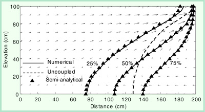
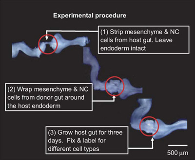
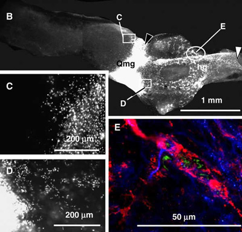
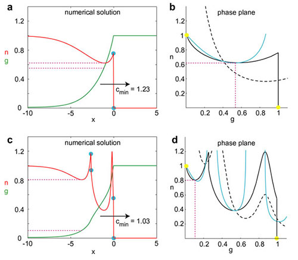
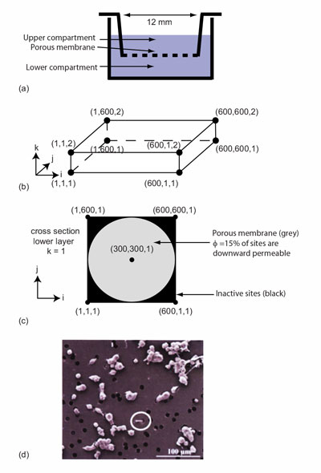
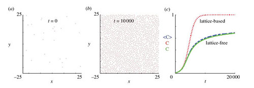
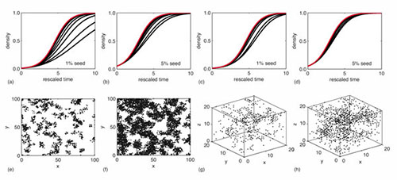
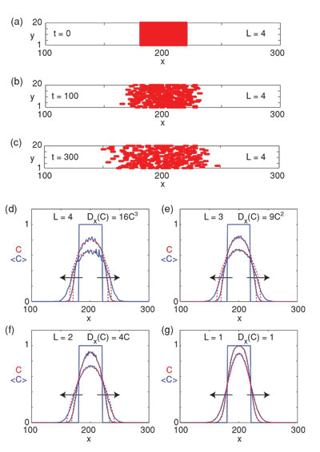
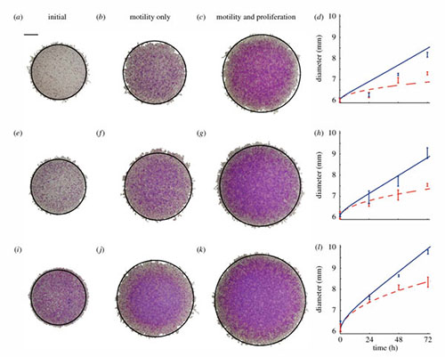
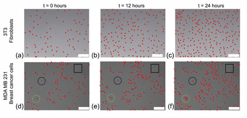

Gallery
Understanding how fresh and saline fluids mix in coastal aquifers is essential for managing coastal water resources. The image shows the solution of a mathematical model describing the mixing of fresh and saline fluids. The image shows a numerical solution of a set of coupled partial differential equations describing the distribution of salt and a semi-analytical solution of a related set of coupled partial differential equations. See publications by Simpson and Clement (Advances in Water Resources 2003; Water Resources Research 2004) for more information.
The development of the enteric nervous system involves a population of precursor cells, called neural crest cells, invading the entire length of the developing gut tissues in a wave that travels from the oesophagus to the anus. To understand the relative roles of cell motility and cell proliferation in this system, we devised a novel chick-quail graft system allowing us to look inside the details of the wave of cells. The image shows the preparation of the chick-quail graft. A series of mathematical models incorporating a general cell motility mechanism and a carrying capacity-limited proliferation mechanism were used to qualitatively model the experiments. We found that several different types of motility mechanisms (undirected random motility, chemotaxis and chemokinesis) could explain the observed behaviour leading us to conclude that the details of the cell motility mechanism were less important than the details of the cell proliferation mechanism. See publications by Simpson, Landman and Newgreen (Journal of Theoretical Biology 2006; Developmental Biology 2007; Development Growth & Differentiation 2007) for more details.
The development of the enteric nervous system involves a population of precursor cells, called neural crest cells, invading the entire length of the developing gut tissues in a wave that travels from the oesophagus to the anus. To understand the spatial organization of cell function in different locations along the axis of the invasion wave, we devised a novel chick-quail graft system allowing us to look inside the details of the wave of cells. The image shows labelled cells within the invasion wave of cells in one of the chick-quail grafts. Our results, supported by continuum mathematical models, indicate that cell proliferation is restricted to a relatively small region just behind the leading edge of the invasion wave whereas proliferation well behind the leading edge is reduced. See publications by Simpson, Landman and Newgreen (Journal of Theoretical Biology 2006; Developmental Biology 2007; Development Growth & Differentiation 2007) for more details.
Mathematical models of cell invasion, incorporating carrying capacity limited proliferation and chemotactic motility is thought to play a role in wound healing, development and malignant spreading. These models can support travelling wave solutions that can only be studied by using specialized high-accuracy, high-resolution numerical methods since the solutions can be shock-fronted. Here we present a series of novel travelling wave solutions that can contain multiple shocks and non-monotone shapes. These solutions and their details can be studied using the phase plane and can therefore serve as an important benchmark test case to test new algorithms for solving hyperbolic conservation laws. See publications by Simpson and Landman (Journal of Computational Physics 2007, Physica D: Nonlinear Phenomena 2008) for more details.
Transwell experiments are routinely used to study cell migration and to assess how different growth factors and nutrients affect cell migration. In this work we study MCF-7 breast cancer cell migration in a Transwell, shown in (a). Various experimental conditions lead to a variety of monotone and nonmonotone responses which are difficult to interpret. We anticipate that the experimental results could be caused by cell-to-cell adhesion or cell-to-cell crowding. Without any modelling, it is impossible to understand the relative roles played by these two mechanisms. A lattice-based exclusion process random-walk model incorporating agent-to-agent adhesion is applied to the experimental system, shown in (b)—(c). Our combined experimental and modelling approach shows that a low value of cell-to-cell adhesion strength provides the best explanation of the experimental data suggesting that volume exclusion plays a more important role than cell-to-cell adhesion. This combined experimental and modelling study gives insight into the cell-level details and design of Transwell assays. See the publication by Simpson, Towne, McElwain and Upton (Physical Review E 2010) for more details.
Individual-based models describing the migration and proliferation of a population of cells typically assume that the location of individual cells is restricted to an artificial predefined lattice. An implicit assumption of this type of lattice-based model is that a proliferative population will always eventually fill the lattice. Instead, in this work, we develop a new lattice-free individual-based model that incorporates cell-to-cell crowding effects, as shown in (a)—(b). Approximate mean-field descriptions are derived for common experimental conditions. Lattice-free simulation results are compared with these mean-field descriptions and with a corresponding lattice-based model, as shown in (c). An important aspect of the new lattice-free model is that the confluent cell density is not predefined, as with lattice-based models, but an emergent model property. As a consequence of the more realistic, irregular configuration of cells in the lattice-free model, the population growth rate is much slower at high cell densities and the population cannot reach the same confluent density as an equivalent lattice-based model. See the publication by Plank and Simpson (Journal of the Royal Society Interface 2012) for more details.
Mean-field descriptions of discrete models of collective movement, proliferation and death processes are often derived by assuming that the occupancy status of lattice sites is independent. Although this assumption is questionable, it is the foundation of many mean-field models. In this work we develop methods to relax the independence assumption for a range of discrete exclusion-process-based mechanisms motivated by applications from cell biology. Our new methods, based on considering the evolution of moment dynamics, rely on an approximate moment closure assumption. These methods allow us to describe spatially correlated processes, such as the development of patchiness in the spatial distribution of individuals within a population, such as the discrete simulation data shown in this image. See the publications by Baker and Simpson (Physical Review E 2010, Physical Review E 2011) for more details.
Continuum diffusion models are often used to represent the collective motion of cell populations. Most previous studies have simply used linear diffusion to represent collective cell spreading, while others found that degenerate nonlinear diffusion provides a better match to experimental cell density profiles. In the cell modeling literature there is no guidance available with regard to which approach is more appropriate for representing the spreading of cell populations. Furthermore, there is no knowledge of particular experimental measurements that can be made to distinguish between situations where these two models are appropriate. Here we provide a link between individual-based and continuum models using a multiscale approach in which we analyze the collective motion of a population of interacting agents in a generalized lattice-based exclusion process. For round agents that occupy a single lattice site, we find that the relevant continuum description of the system is a linear diffusion equation, whereas for elongated rod-shaped agents that occupy L adjacent lattice sites, such as the image show, we find that the relevant continuum description is connected to the porous media equation (PME). The exponent in the nonlinear diffusivity function is related to the aspect ratio of the agents. Our work provides a physical connection between modeling collective cell spreading and the use of either the linear diffusion equation or the PME to represent cell density profiles. Results suggest that when using continuum models to represent cell population spreading, we should take care to account for variations in the cell aspect ratio because different aspect ratios lead to different continuum models. See the publications by Simpson, Baker and McCue (Physical Review E 2011) for more details.
Moving fronts of cells are essential features of embryonic development, wound repair and cancer metastasis. This work describes a set of experiments to investigate the roles of random motility and proliferation in driving the spread of an initially confined cell population, as shown in the image. The experiments include an analysis of cell spreading when proliferation was inhibited. Our data have been analysed using two mathematical models: a lattice-based discrete model and a related continuum partial differential equation model. We obtain independent estimates of the random motility parameter and the intrinsic proliferation rate and we confirm that these estimates lead to accurate modelling predictions of the position of the leading edge of the moving front as well as the evolution of the cell density profiles. Our results provide evidence that continuum models, based on the Fisher-Kolmogorov equation, are a reliable platform upon which we can interpret and predict such experimental observations. See the publication by Simpson, Treloar, Binder, Haridas, Manton, Leavesley, McElwain and Baker (Journal of the Royal Society Interface 2013) for more details.
Standard differential equation-based models of collective cell behaviour, such as the logistic growth model, invoke a mean-field assumption which is equivalent to assuming that individuals within the population interact with each other in proportion to the average population density. Implementing such assumptions implies that the dynamics of the system are unaffected by spatial structure, such as the formation of patches or clusters within the population. Recent theoretical developments have introduced a class of models, known as moment dynamics models, which aim to account for the dynamics of individuals, pairs of individuals, triplets of individuals, and so on. Such models enable us to describe the dynamics of populations with clustering; however, little progress has been made with regard to applying moment dynamics models to experimental data. Here, we report new experimental results describing the formation of a monolayer of cells using two different cell types: 3T3 fibroblast cells (top row of image) and MDA MB 231 breast cancer cells (bottom row of image) Our analysis indicates that the 3T3 fibroblast cells are relatively motile and we observe that the 3T3 fibroblast monolayer forms without clustering. Alternatively, the MDA MB 231 cells are less motile and we observe that the MDA MB 231 monolayer formation is associated with significant clustering. We calibrate a moment dynamics model and a standard mean-field model to both data sets. Our results indicate that the mean-field and moment dynamics models provide similar descriptions of the 3T3 fibroblast monolayer formation whereas these two models give very different predictions for the MDA MD 231 monolayer formation. These outcomes indicate that standard mean-field models of collective cell behaviour are not always appropriate and that care ought to be exercised when implementing such a model. See the publication by Simpson, Binder, Haridas, Wood, Treloar, McElwain and Baker (Bulletin of Mathematical Biology, 2013) for more details.